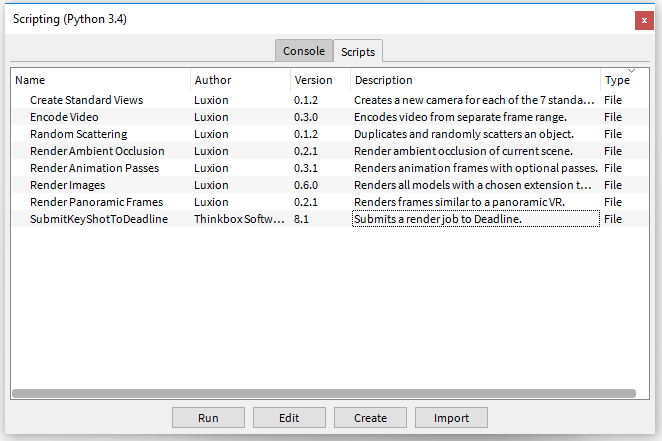
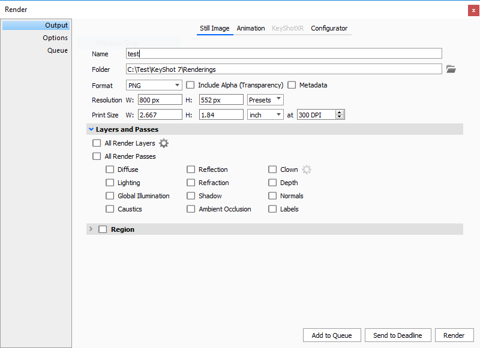
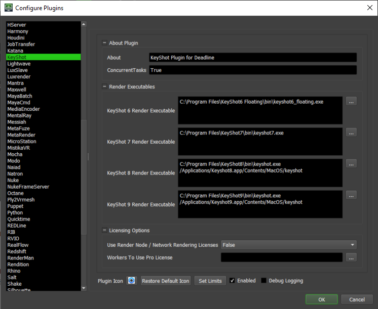

KeyShot¶
Job Submission¶
You can submit jobs from within KeyShot by installing the integrated submission script, or you can submit them from the Monitor. The instructions for installing the integrated submission script can be found further down this page.
To submit from within KeyShot, open the scripting console (Window -> Scripting Console) and then run the script SubmitKeyShotToDeadline.py. Starting in KeyShot 7.2 you can also submit by pressing the Send to Deadline button in KeyShot’s Render window.
 Submission Options¶
The general Deadline options are explained in the Job Submission documentation, and the Draft/Integration options are explained in the Draft and Integration documentation. The KeyShot specific options are:
KeyShot File: The KeyShot file to be rendered. The two supported file extensions are bip and ksp.
Output File: The filename of the image(s) to be rendered.
Render Width and Height: The resolution of the output in pixels.
Include All Render Layers: If enabled, all Render Layers will be rendered.
Include Alpha: If Enabled, include the alpha pass in the rendered file.
Override Render Passes: If enabled, the render passes selected in the submitter will be used instead of those defined within the scene.
Quality To Render By: Determine whether to render based on the Maximum Number of Samples, Maximum Time, or a combination of both.
BIP vs. KSP¶
BIP files do not have their assets pathmapped. External references have to be available to each Worker as they’re defined in the scene.
KSP is a bundle of all the external assets with the scene compressed into a single file.
Rendering through AWS Portal¶
To avoid pathmapping issues, if you’re using external assets and want to render with AWS Portal, you should consider submitting a KeyShot Bundle/Package (KSP).
Plugin Configuration¶
You can configure the KeyShot plugin settings from the Monitor. While in power user mode, select Tools -> Configure Plugins and select the KeyShot plugin from the list on the left.
Render Executables
KeyShot Executable: The path to the KeyShot executable file used for rendering. Enter alternative paths on separate lines. Different executable paths can be configured for each version installed on your render nodes.
Licensing Options
Use Render Node / Network Rendering Licenses: If enabled, use render node (before KeyShot 9.2) or network rendering (KeyShot 9.2 and higher) licenses. Otherwise, KeyShot will use pro licenses.
Workers To Use Pro License: A list of Workers that should use a KeyShot pro license instead of a render node or network rendering license. Use a , to separate multiple Worker names, for example: worker001,worker002,worker003
Integrated Submission Script Setup¶
The following procedures describe how to install the integrated KeyShot submission script. This script allows for submitting KeyShot render jobs to Deadline directly from within the KeyShot GUI. The script and the following installation procedure has been tested with KeyShot 6 and later.
Submitter Installer¶
Run the Submitter Installer located at
<repository>/submission/KeyShot/Installers.
Manual Installation¶
KeyShot 6 and 7
Within KeyShot open the Script Console (Window -> Scripting Console).
On the Scripts tab of the Script Console import the file SubmitKeyShotToDeadline.py located at
<repository>/submission/KeyShot/Client.
KeyShot 7.2 and Forward
Copy
<Repository>\submission\KeyShot\Client\SubmitKeyShotToDeadline.pyto:%localappdata%\Thinkbox\Deadline[VERSION]\submitters\KeyShotSubmitteron Windows or~/Library/Application Support/Thinkbox/Deadline[VERSION]/submitters/KeyShotSubmitteron macOS (where [VERSION] is the major version of Deadline such as 10):Copy
<Repository>\submission\KeyShot\Client\deadline.jsonto the root directory of your KeyShot resources directory. The KeyShot resources folder can be found in KeyShot by going to the Folder Preferences tab of the Preferences window.Update the deadline.json file that was copied by replacing HOMEDIR with the directory that you copied SubmitKeyShotToDeadline.py to.
FAQ¶
Which versions of KeyShot are supported?
KeyShot 6 and later is supported.
Can I use KeyShot Render Node and Network Rendering Licenses?
Yes, in order to use KeyShot render node or network rendering licenses, you must enable “Use Render Node / Network Rendering Licenses” in the Plugin Configuration. Doing so will make all Workers, except those specified on an allow list, use render node / network rendering licenses.
Error Messages and Meanings¶
This is a collection of known KeyShot error messages and their meanings, as well as possible solutions. We want to keep this list as up to date as possible, so if you run into an error message that isn’t listed here, please contact Deadline Support and let us know.
Exception during render: Renderer returned non-zero error code, -1.
When this error message is printed it normally means that KeyShot was unable to pull a render node or a network rendering license. Please ensure that the Worker is able to access the license server and that render node / network rendering licenses are available or add this Worker to the “Workers To Use Pro Licenses” in they KeyShot Plugin Configuration Menu.

{kind=link}
{kind=link}
{kind=link}
{kind=link}
{kind=link}